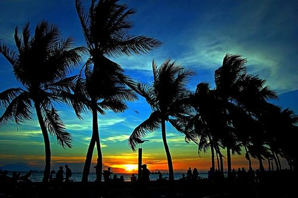
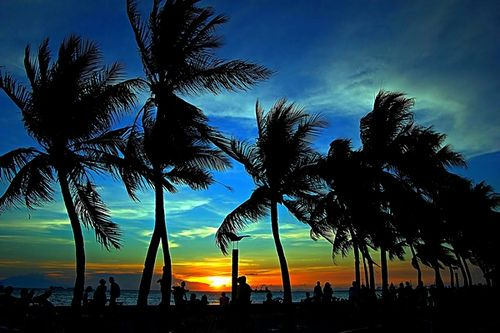

Why Manila
Manila, as the "Pearl of the Orient".
Manila, the capital of the Philippines, is a densely populated bayside city on the island of Luzon, which mixes Spanish colonial architecture with modern skyscrapers. Intramuros, a walled city in colonial times, is the heart of Old Manila. It’s home to the baroque 16th-century San Agustin Church as well as Fort Santiago, a storied citadel and former military prison.
Manila, known as the “Pearl of the Orient”, is the nation's capital city. This bustling historic city is full of things to see and do — including museums, parks, theaters, shopping malls and a plethora of restaurants to choose from.
CAFÉS
My favorite cafés in Manila
Seattle's Best Coffee
A lively all-day café with an outdoor terrace that serves everything you could want from breakfast and brunch to evening cocktails.
Address:
#1008 Sampaloc, Manila
What I like about it
This is one of the best brunch spots in Manila but if you go at any time of day there will be something delicious on the menu!
Starbucks Cafe
Everyone's favorite neighborhood cafe with a variety of breakfast and brunch options.
Address:
Ali-Mall, Cubao, Metro Manila,
What I like about it
They offer the best coffee and showed the best attitude to its costumers. Internet connection is very fast and is unlimited as well. The primary focus of the Starbucks brand, as Howard Schultz put it, was the “meeting place between home and work,” by transforming coffee into a customized experience.

Leo's Cafe
The warm and cozy of the place invites you to stay from breakfast through dinner. They have excellent coffee and locally-sourced wines.
Address:
#1850 Del Pilar St, Malate, Manila
What I like about it
I really like the atmosphere, good coffee, and nice interior. A neighborhood café in the heart of Manila. The staffs are incredibly friendly and chatty. It has the best coffee in Malate, Manila!
Gallery
My Photos from Manila
 
